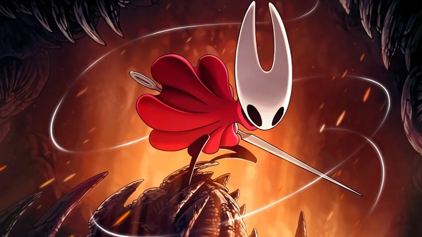
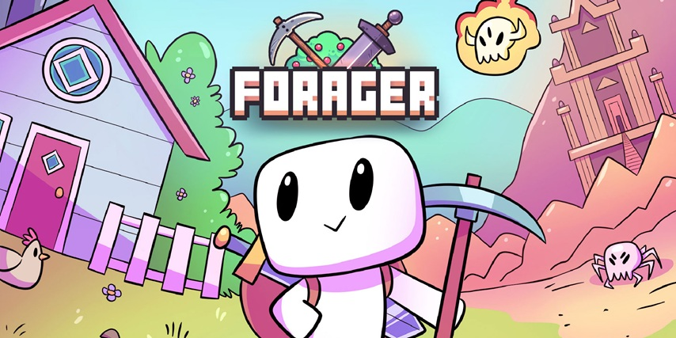
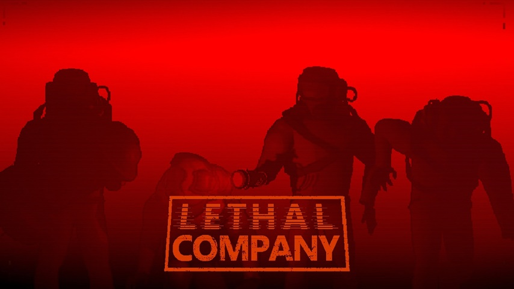

Juegos Indies Destacados
Terraria

Terraria es un videojuego en 2D de estilo pixel art centrado en la exploración, la supervivencia y la construcción en un mundo generado de forma procedural. El jugador comienza con recursos básicos y debe recolectar materiales, fabricar herramientas, construir refugios y enfrentarse a distintos enemigos mientras avanza en el juego.
A medida que se progresa, el mundo evoluciona: aparecen nuevos biomas, eventos especiales, enemigos más poderosos y jefes desafiantes que cambian la dinámica de la partida. El juego ofrece una gran variedad de objetos, armas, armaduras y accesorios, lo que permite distintos estilos de juego.
En sus primeros años tras el lanzamiento, Terraria fue comparado frecuentemente con *Minecraft* debido a ciertas similitudes como la recolección de recursos y la construcción en un mundo abierto. Sin embargo, con el tiempo demostró tener una identidad propia, enfocándose más en el combate, la progresión mediante jefes y una mayor variedad de equipamiento y eventos.
Hollow Knight

Hollow Knight es un videojuego independiente de acción y aventura en 2D, perteneciente al género metroidvania. Fue desarrollado por el estudio australiano Team Cherry y se caracteriza por su estilo artístico dibujado a mano, su ambientación oscura y su profunda exploración.
El juego se desarrolla en el reino subterráneo de Hallownest, un mundo interconectado lleno de secretos, criaturas misteriosas y ruinas antiguas. El jugador controla a un pequeño caballero que debe explorar distintas zonas, enfrentarse a enemigos desafiantes y derrotar poderosos jefes mientras descubre la historia oculta del reino.
A medida que se avanza en Hollow Knight, se desbloquean nuevas habilidades que permiten acceder a áreas antes inaccesibles, lo que fomenta la exploración constante y el regreso a zonas ya visitadas. El combate es preciso y exigente, premiando la habilidad y la paciencia del jugador.
Desde su lanzamiento en 2017, Hollow Knight ha sido ampliamente reconocido por su diseño de niveles, su atmósfera envolvente, su banda sonora y su dificultad equilibrada. Con el tiempo se convirtió en uno de los juegos indie más aclamados, destacando por su profundidad, narrativa ambiental y gran cantidad de contenido.
Hollow Knight: Silksong

Hollow Knight: Silksong es un videojuego independiente de acción y aventura en 2D, perteneciente al género metroidvania y desarrollado por Team Cherry. Mantiene el estilo artístico dibujado a mano y la ambientación oscura de su predecesor, pero introduce una propuesta más ágil y dinámica centrada en la movilidad y el combate rápido.
La historia sigue a Hornet, quien es llevada a un nuevo reino lleno de peligros, criaturas desconocidas y ciudades en decadencia. El jugador deberá explorar un mundo interconectado repleto de secretos, misiones y enfrentamientos contra jefes desafiantes, mientras descubre los misterios que rodean esta nueva tierra.
A medida que se avanza en la aventura, se desbloquean habilidades y herramientas que permiten acceder a zonas antes inaccesibles, fomentando la exploración constante y el regreso a áreas previamente visitadas. El combate destaca por su velocidad y precisión, ofreciendo enfrentamientos intensos que exigen reflejos y estrategia.
Considerado la secuela directa de Hollow Knight, Silksong amplía las mecánicas originales con un enfoque más vertical, mayor variedad de enemigos y un diseño de niveles que apuesta por una experiencia más dinámica sin perder la esencia que hizo destacar al título original.
Geometry Dash

Geometry Dash es un videojuego de plataformas en 2D con enfoque rítmico, desarrollado por RobTop Games. Se caracteriza por su estilo visual minimalista y colorido, así como por una jugabilidad basada en la precisión y la sincronización con la música electrónica que acompaña cada nivel.
El jugador controla una figura geométrica que avanza automáticamente a lo largo de escenarios llenos de obstáculos, trampas y secciones con cambios de gravedad, velocidad y forma. El objetivo es completar cada nivel sin chocar, lo que exige reflejos rápidos y memorización de patrones. Un solo error implica comenzar de nuevo desde el inicio, reforzando su dificultad característica.
A medida que se progresa en Geometry Dash, se desbloquean nuevos iconos, colores y opciones de personalización, además de niveles cada vez más complejos. Uno de sus aspectos más destacados es el editor de niveles, que permite a la comunidad crear y compartir sus propios desafíos, ampliando considerablemente la cantidad de contenido disponible.
Desde su lanzamiento en 2013, Geometry Dash se ha consolidado como uno de los juegos de ritmo más populares, reconocido por su dificultad exigente, su comunidad activa y su enorme variedad de niveles creados por jugadores de todo el mundo.
Forager

Forager es un videojuego independiente de acción, exploración y gestión con perspectiva en 2D, desarrollado por HopFrog y publicado por Humble Bundle. Combina mecánicas de recolección de recursos, construcción y progresión en un mundo compuesto por pequeñas islas que el jugador puede expandir gradualmente.
El jugador comienza con herramientas básicas y debe recolectar materiales, talar árboles, extraer minerales y derrotar enemigos para obtener recursos. Con el tiempo, puede construir estructuras, automatizar procesos y desbloquear nuevas habilidades a través de un árbol de talentos que permite especializar el estilo de juego, ya sea enfocado en la agricultura, la industria, la magia o el combate.
A medida que se adquieren nuevas tierras, aparecen biomas distintos, mazmorras, puzles y jefes que amplían la experiencia. La progresión constante y la posibilidad de optimizar la producción de recursos convierten a Forager en un juego centrado tanto en la exploración como en la eficiencia y la expansión.
Desde su lanzamiento en 2019, Forager ha sido reconocido por su estilo visual colorido, su ritmo adictivo y su combinación accesible de mecánicas inspiradas en títulos de exploración, supervivencia y gestión, consolidándose como una propuesta destacada dentro del panorama indie.
Among Us

Among Us es un videojuego multijugador de deducción social desarrollado por el estudio estadounidense InnerSloth. Se centra en la cooperación y el engaño dentro de una ambientación espacial, donde un grupo de jugadores debe completar tareas mientras intenta descubrir quiénes son los impostores infiltrados en la partida.
El juego se desarrolla en distintos mapas ambientados en naves y bases espaciales. La mayoría de los jugadores asumen el rol de tripulantes y deben realizar misiones para mantener el funcionamiento del lugar, mientras que uno o varios impostores tienen como objetivo sabotear el sistema y eliminar a los demás sin ser descubiertos. Tras cada incidente o reunión de emergencia, los jugadores debaten y votan para expulsar al sospechoso.
A medida que avanzan las partidas, la estrategia, la comunicación y la capacidad de persuasión se vuelven fundamentales para ganar. Among Us destaca por su jugabilidad sencilla, partidas rápidas y una dinámica social que genera situaciones impredecibles.
Aunque fue lanzado en 2018, el juego alcanzó gran popularidad en 2020 gracias a creadores de contenido y transmisiones en línea, convirtiéndose en un fenómeno global y en uno de los títulos multijugador más reconocidos de los últimos años.
Lethal Company

Lethal Company es un videojuego independiente de terror cooperativo en primera persona desarrollado por Zeekerss. Se centra en la exploración de instalaciones abandonadas en lunas industriales, donde un grupo de jugadores debe trabajar en equipo para recolectar chatarra y cumplir con la cuota exigida por una misteriosa corporación.
El juego combina exploración, supervivencia y comunicación estratégica. Los jugadores se adentran en complejos oscuros y laberínticos llenos de criaturas hostiles y peligros ambientales, utilizando herramientas limitadas como linternas, radares y sistemas de comunicación. La coordinación es fundamental, ya que cualquier error puede poner en riesgo a todo el equipo.
A medida que avanzan los días dentro del juego, la dificultad aumenta y las lunas disponibles presentan amenazas más impredecibles. La gestión del riesgo, la toma de decisiones rápidas y la distribución eficiente del botín son claves para sobrevivir y alcanzar la cuota establecida.
Desde su lanzamiento en 2023, Lethal Company ha ganado gran popularidad gracias a su atmósfera tensa, su enfoque cooperativo y las situaciones caóticas que surgen de la interacción entre jugadores, consolidándose como uno de los títulos de terror multijugador más destacados del panorama indie reciente.